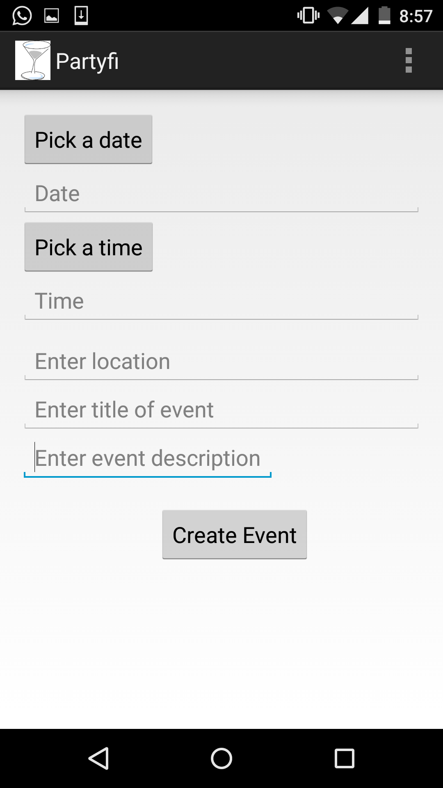
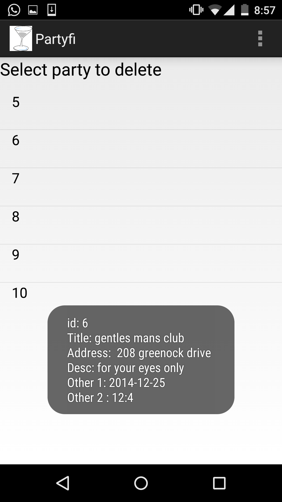
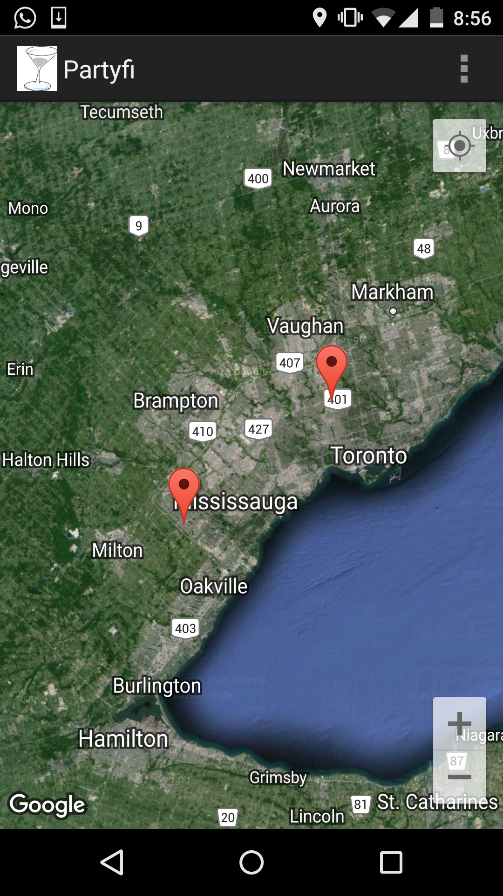
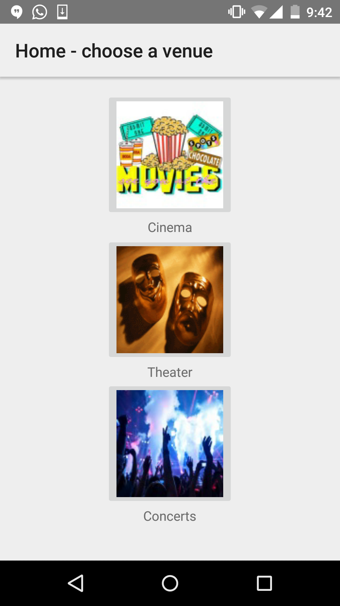
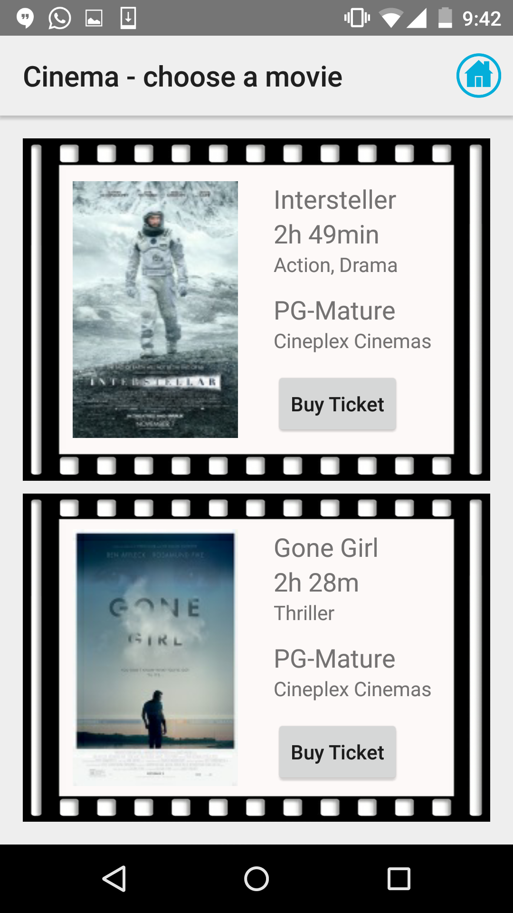
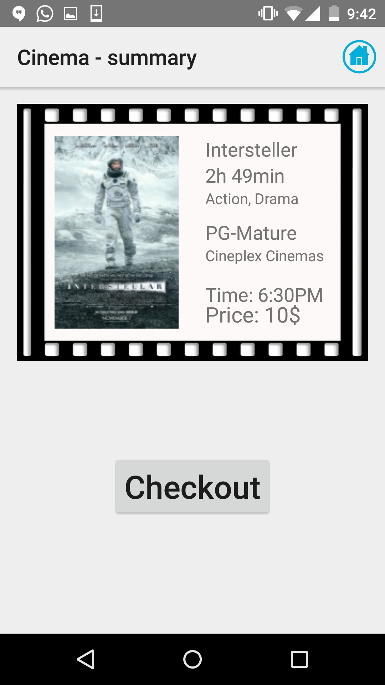

Bachelor of Technology - Software Development Degree
Seneca@York, Toronto, Ontario, 2012 – 2015
Android Social Meeting App
Dungeon Buddy
HTML/CSS/PHP Website for a Dentist’s Office
C++ Based Role Playing Game
Software Developer
Phoenix Geophysics, Toronto Ontario, 2015
Quality Assurance Specialist
Bnotions, Toronto Ontario, 2014
A team player
Being a teamplayer is in my blood! I enjoy working and communicating with others about projects, objectives, and propsals.
Overtime at phoenix Geophysics and Bnotions I have further developed my skills at being a teamplayer. Without my communication skills I would not have finished my objectives and tickets that we're assigned to me.
Adaptable
Being adaptable is a great skill to have for me, I worked with many different languages, platforms, and ideas, without it I wouldn't understand anything
My work at phoenix changed greatly from my previous job at Bnotions. Now dealing with windows applications instead of mobile platforms I needed a new mindset to deal with the problems that occured. Thanks to my adaptability I learned to cope with these problems and floruish at Phoenix Geophysics
Problem solving
Problem solving is one of my strongest skills. I learned how to utilize it better in both seneca and in the work environment
All throught my life, I have developed my problem solving skills, each job, assignment, and homework brought new problems to the table, and with my already honed skills solved said problems which in turn further enhanced my problem solving skills
Proficiency in C++ and Java
In my years in college and personal exprience I have learned to understand the complex natures of both C++ and Java and can code well in both.
At seneca, we learned how to use both C++ and Java programming languages, and later on, I learned how to further enhance my C++ expertise by working for phoenix geophysics. In addtion I have attempted to program a large number of games in C++
Vast IDE knowledge
I have learned how to use various IDE's including Visual studio, QT, Android Studio, Notepad++, and Netbeans
Over the course of my programming carrer I have come to rely on multiple types of IDE's for many purposes. Anything from visual studio for C++, to Android development on the android studio IDE.
Website for a Dentist’s Office
This website was created for a client in one of my classes, This site focuses on creating a good user exprience mixed with a professtional look. It incorporates systems for booking, cancelling, and managing appointments for doctors and clients
Partyfi (Social app)
This app for the android is used as a social meet-up app, integreating the ability to create parties, delete your parties, and find new ones. If you ever wondered if there is anything new going on near you, this is the app for you! It is WIP

Ticket purchasing app
This app was created by me and a teammate to help in the purchasing of tickets for 3 venus, Movie, Theater, and Concerts, shown below is a picture of the ability to purchase a movie ticket
